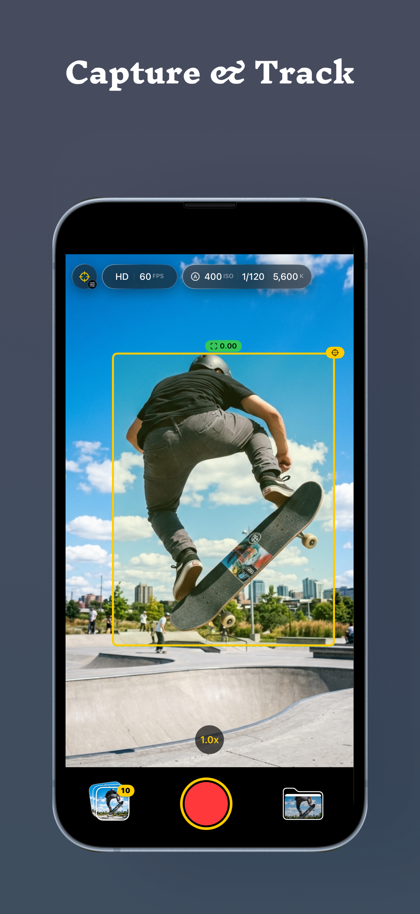
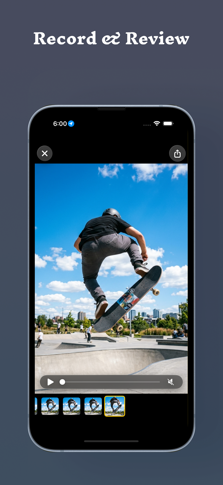
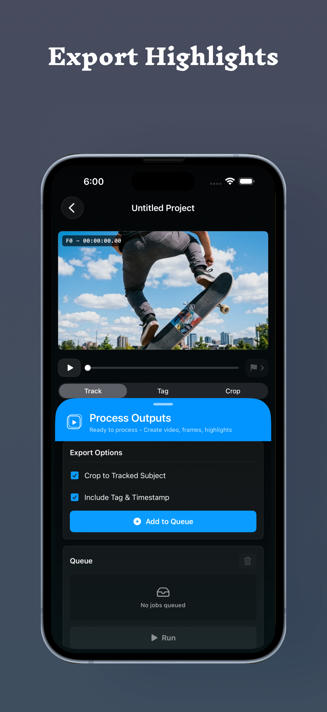

Record sports video
Use the iPhone camera to preview and record fast-moving sports moments without turning the experience into a social feed.
Sports video, focused
SpeedLens is a focused iPhone camera for recording sports video and reviewing clips on your device. Your videos and review data stay with you.

Made for the sideline
Open the camera, record the play, save the video, and review it on the device you already have with you.
Focused tools
SpeedLens uses iPhone camera, microphone, Photos, and optional Location access only for the features you choose to use.
Use the iPhone camera to preview and record fast-moving sports moments without turning the experience into a social feed.
Microphone access can be used to record audio with your videos when that context matters.
Save, index, and play back videos on your device. Recorded video, metadata, settings, and review data are not sent to the developer.
Grant Location access only when you want SpeedLens to add GPS metadata to recorded videos.
How SpeedLens works
Keep the workflow close to the action: capture, review the moment, then create the output you need.
Keep camera controls close at hand and see the tracked subject directly in the capture frame.

Review recorded video and frame thumbnails to inspect the part of the action you need.

Use Track, Tag, and Crop tools, then choose crop and Tag & Timestamp options for processed video output.
Support
Questions, feedback, and bug reports are welcome. Include your iPhone model and iOS version when they are relevant.